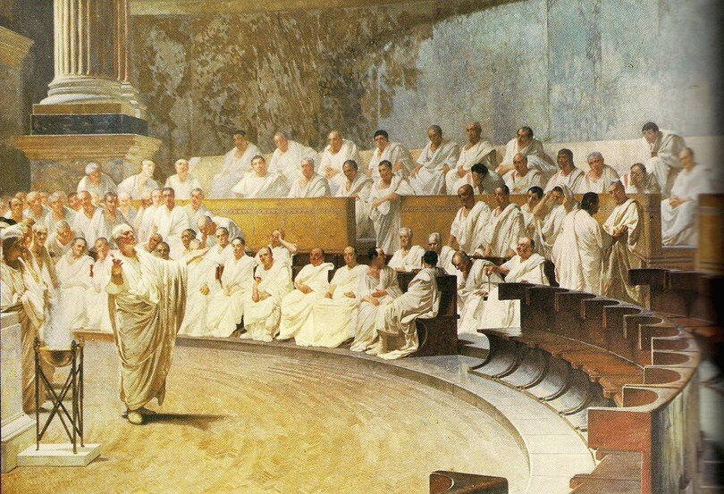
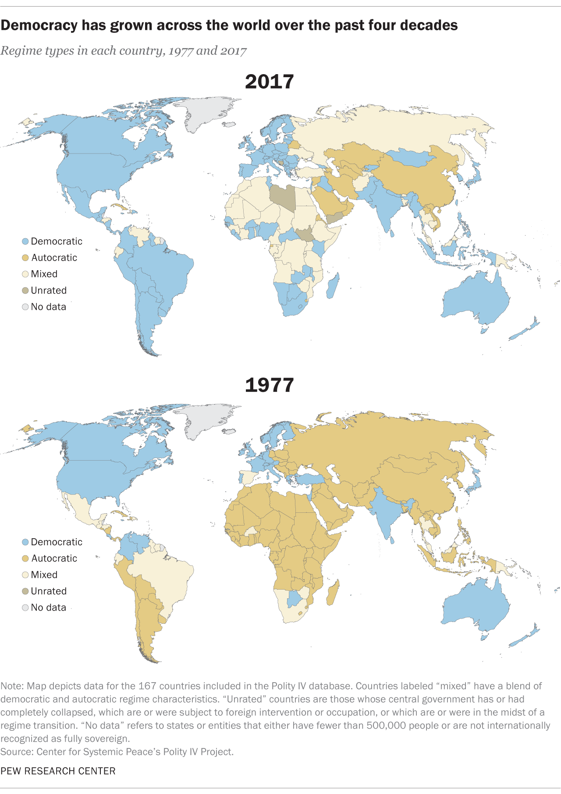
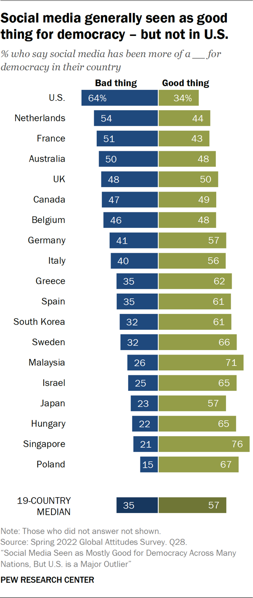

历史上的民主 History of Democracy
民主的历史 : 民主政体是历史上的重要政治制度之一。在不同的历史阶段和地方，民主的精神都可以见到其踪迹。而民主主义的运作方式也有诸多差异。公元前500年，在古希腊城市，。人民直接决定政策。人民举行会议。他们讨论了问题。后来参加会议的人投票决定城市政策。这种民主主义叫做 “直接民主主义".
几百年后， 古希腊被罗马帝国征服了。（罗马帝国中心位于现在意大利） 罗马帝国共和时期，人民有投票权利。但是， 只有男人公民可以投票.
大约公元400年， 罗马帝国解体了。 在欧洲， 出现了公国和王国。 普通人民没有政权。 在亚洲，南美洲，印度，中东也 由一个人统治。 非洲有村长，北美洲有部落首领。 地球上没有看到民主。
在1200年， 英国贵族联合起来限制国王的权威。 英国的大宪章限制了国王可以向贵族征税的税款。第61 条规定， 由25名男爵的委员会可以开会并否决国王的意志。
在1689年， 英国的权利法案建立了君主里限制。国王的决定没有先得到会议代表的同意， 不能生效。
在1776年， 美国得到独立， 成为一个民主国家。独立宣言说政权来自人民。
现在， 因为人民住在国家，人口太大了。不能用直接民主的方法治理国家。必须在某某地区选举代表， 代表人民。被选出来的代表就决定市，县， 州 和国家的政策。这种民主主义叫做 ”代表民主主义“。现在，所有的民主国家是代表民主国家。

民主在世界范围内的传播 Worldwide Spread of Democracy
据2017年资料， 167 个国家中有96个是某种民主国家。这等于所有国家的57%. 将近四打其他国家——46个——，或28%——表现出专制和民主的特征。

社交媒体与民主 Democracy and Social Media

人民主权 Popular Sovereignty
add content

自由公正的选举 Free and fair Elections
add content

投票资格 Voting qualifications
add content

投票站 Polling Stations
add content

政治竞选 Campaigns
add content

问责制和透明度 Accountibility and Transparency
add content

多党制 Two Political Parties
争民主党与共和党
→ 丙战的另一后果就是党派基本以地区划分,北方是共和党 的地盘,南部则是铁板一块的民主党天下,只有少数几个州中存 在着两党拉锯的局面。一次大战后共和党连续三任总统,政策上 越来越倾向大企业利益。南方则继续排斥黑人,推行白人至上的 种族主义。直到1928年。南方只选民主党候选人的做法才第一次 出现突破,当时为了反对不赞成禁酒的天主教的史密斯当选,有 四个南方州将选票投给了共和党的胡佛。
大萧条和新政组成了罗斯福联盟5民主党形成了全国性的多 数,团结了东北部城市中的劳工以及中西部和南方的农村尤其 值得注意的是黑人从此转向了民主党。当时在民主党中,南方比 较保守,其余地区则比较倾向自由派。在共和党中,中西部和西 部的农村比较保守,而东北部則更自由派或中间派。
1960年代民权运动后,南方越发趋向保守。出于对民主党全
国总部的自由派倾向的不满,他们在1968年支持亚拉巴马的种族 隔离分子乔治华莱士作为独立候选人参加总统竞选。此后,南 方越来越选择共和党的总统。1972年,昔日的同盟10州全部选 举尼克松;从此结束了南方长达一百年的民主党历史,而尼克松 联盟主要是趋向保守的白人中产阶级联盟。虽然来自佐治亚的 卡特在1972 年曾使南方一度回到民主党,但1984年里根为共 和党贏得了全部南方,使它成为一个保守的右翼政党,而西部历 来是稳固的共和党地盘。不过在两党制的条件下,任何一党都不 敢太走极端,为了团结中间温和派,共和党右翼也只能作些让 步。
出于竞选的考虑,两党都在尽力结成最广泛的联盟,因此两 党中都有从最极端的自由派到最极端的保守派间的各种人物。政 党并不能完全反映根本的社会、经济、地理宗教的差异,它们 的立场、社会基础和选民都一直在变化。虽然现在民主党的支持 者中更多的是城市中收入低、受教育少的那部分人,尤其是少数 民族,但是在美国并不存在一个所谓“穷人的党”。两党的包容性 如此之大。以至于不少人认为两党的区别正在模糊。党派意识和 党派忠诚一直在下降,坚定的党员已经减少了三分之一,而三分 之一以上的选民在投票时并不考虑自己的派别。无党派人士的重 要性正在上升,受教育多收入高的年轻人更容易有意识地独立于 两党之外,进行跳党党的选举 同时,由于总统预选等政治改 革,候选人依赖政党的程度也一直在减少.
两党还不是毫无区别的。共和党一直在维护企业利益, 针对民主党新政所实施的一系列政府干预经济、建立社会保障等 政策,共和党提出压缩政府最低限度干预企业、实行高关税,将 贫穷等社会问题交给私人去解决等主张,1960年代后,两党的争 论更多地反映在赞助性反歧视法、社会福利、枪支管理、堕胎等问题上。从全国范围看,共和党越来越成为美国保守势力的政党, 自称保守派的共和党人两倍于民主党人,其东北部自由派一翼的 影响日趋减弱。民主党则处于中间自由派的立场。两党目前可 以说势均力敌,不存在一党完全压倒另一党的可能。

民主党 Democratic Party
add content

民主党的政策立场 Democratic Party Policy Positions
add content
共和党 Republican Party
add content

共和党的政策立场 Republican Party Policy Positions
add content

独立政党 Independent Parties
add content

竞选公职 Running for Office
add content